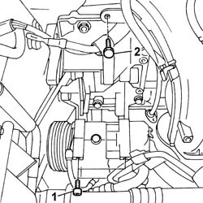
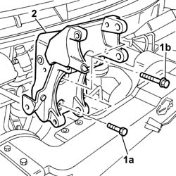

4130B27 POWER ASSISTED STEERING PUMP AND ALTERNATOR MOUNTING - R.R.
- Path
- Procedures > 41 STEERING UNIT > 4130 POWER STEERING > 4130B POWER STEERING HYDRAULIC SYTEM > 4130B27 POWER ASSISTED STEERING PUMP AND ALTERNATOR MOUNTING - R.R.
- Kind
- repair procedure (removal / refitting; the operation number is the code)
- Applies to
- engines: 2.0 16v, 2.0 16V JTD, 2.2 16V JTD; all production periods
- Interactive page
- https://sloeber94.github.io/elrnDB-fUlss/en/#/179007361
Applies to: engines: 2.0 16v; all production periods
 Removing
Removing
 Refitting
RefittingOp. 5530B56 BATTERY DRIP TRAY COVER - R.R.
- Disconnect the negative battery terminal.
Op. 4450B04 RIGHT FRONT WHEEL - R.R
Op. 7055B91 RIGHT FRONT WHEEL ARCH LINER - R.R.
Op. 4410D16 BRACKET (ONE) RETAINING CHASSIS TO BODY - R R
- < R1 > [Left side, front]
See descriptions
Op. 4130B10 POWER STEERING FLUID RESEVOIR - R.R.
Op. 4130B12 POWER STEERING FLUID RESERVOIR MOUNTING/BRACKETS - POSITION
Op. 5050A12 PIPE IN ENGINE BAY FOR CARRYING LIQUID TO WINDSCREEN WASHER RESEVIOR R R
Op. 4130B20 POWER STEERING PUMP - R.R.
Op. 0010T70 POWER ASSISTED STEERING FLUID - REPLACE
- Svitare le viti di fissaggio superiori del compressore dell'aria condizionata che si impegnano nella staffa ed allentare le viti inferiori.
- Undo the bolt fixing the engine oil dipstick pipe to the cylinder block/crankcase.

Applies to: engines: 2.0 16v; all production periods
- Undo the fixing bolts (1a) and nuts (1b).
- Rimuovere il supporto della pompa servosterzo e alternatore.

Applies to: engines: 2.0 16v; all production periods
Refitting
Removing- Montare il supporto della pompa servosterzo e dell'alternatore ed avvitare le viti ed i dadi di fissaggio a coppia.
- Avvitare la vite di fissaggio del tubo asta olio.
- Avvitare le viti di fissaggio del compressore dell'aria condizionata a coppia.
Op. 4130B20 POWER STEERING PUMP - R.R.
Op. 5050A12 PIPE IN ENGINE BAY FOR CARRYING LIQUID TO WINDSCREEN WASHER RESEVIOR R R
Op. 4130B12 POWER STEERING FLUID RESERVOIR MOUNTING/BRACKETS - POSITION
Op. 4130B10 POWER STEERING FLUID RESEVOIR - R.R.
See descriptions
Op. 4410D16 BRACKET (ONE) RETAINING CHASSIS TO BODY - R R
- < R1 > [Left side, front]
Op. 7055B91 RIGHT FRONT WHEEL ARCH LINER - R.R.
Op. 4450B04 RIGHT FRONT WHEEL - R.R
- Disconnect the negative battery terminal.
Applies to: engines: 2.0 16V JTD, 2.2 16V JTD; all production periods
Removing
RefittingOp. 5530B56 BATTERY DRIP TRAY COVER - R.R.
Disconnect the negative battery terminal.
Position the vehicle on a lift.
Op. 7055B54 UNDER ENGINE PROTECTION/GUARD - R.R.
Op. 4450B04 RIGHT FRONT WHEEL - R.R
Op. 7055B91 RIGHT FRONT WHEEL ARCH LINER - R.R.
See descriptions
See descriptions
See descriptions
See descriptions
Op. 0010T70 POWER ASSISTED STEERING FLUID - REPLACE
Op. 4130B10 POWER STEERING FLUID RESEVOIR - R.R.
Op. 5050A12 PIPE IN ENGINE BAY FOR CARRYING LIQUID TO WINDSCREEN WASHER RESEVIOR R R
Op. 4130B12 POWER STEERING FLUID RESERVOIR MOUNTING/BRACKETS - POSITION
Op. 4130B20 POWER STEERING PUMP - R.R.
Unscrew the bolt and place the wiring channel to one side.
1. Undo the fixing bolts (1a) and (1b).
2. Remove the power steering pump and alternator mount.
Applies to: engines: 2.0 16V JTD, 2.2 16V JTD; all production periods
Refitting
RemovingPosition the power steering pump and alternator mounting and tighten the fixing bolts.
Position the wiring holder bracket and tighten the fixing bolt.
Op. 4130B20 POWER STEERING PUMP - R.R.
Op. 4130B12 POWER STEERING FLUID RESERVOIR MOUNTING/BRACKETS - POSITION
Op. 5050A12 PIPE IN ENGINE BAY FOR CARRYING LIQUID TO WINDSCREEN WASHER RESEVIOR R R
Op. 4130B10 POWER STEERING FLUID RESEVOIR - R.R.
See descriptions
See descriptions
See descriptions
See descriptions
Op. 7055B91 RIGHT FRONT WHEEL ARCH LINER - R.R.
Op. 4450B04 RIGHT FRONT WHEEL - R.R
Op. 7055B54 UNDER ENGINE PROTECTION/GUARD - R.R.
Remove the vehicle from the lift.
Connect the negative battery terminal.
Op. 5530B56 BATTERY DRIP TRAY COVER - R.R.
Op. 0010T11 ENGINE OIL - CHECK LEVEL AND TOP UP, IF NECESSARY
Topics linked from this page (12)
- 0010T11 ENGINE OIL CHECK LEVEL AND TOP UP
- 0010T70 POWER ASSISTED STEERING FLUID - REPLACE
- 4130B20 POWER STEERING PUMP - R.R.
- 4130B10 POWER STEERING FLUID RESEVOIR R R
- 4130B12 POWER STEERING FLUID RESERVOIR MOUNTING/BRACKETS - POSITION
- 4410D16 BRACKET (ONE) RETAINING CHASSIS TO BODY - R R
- 4450B04 RIGHT FRONT WHEEL R R
- 5050A12 WINDSCREEN WASHER FLUID RESERVOIR FILLER PIPE (IN ENGINE COMPARTMENT) - R.R.
- 5530B56 BATTERY DRIP TRAY COVER - R.R.
- 5530A10 ALTERNATOR - R+R
- 7055B54 UNDER-ENGINE GUARD - R R
- 7055B91 RIGHT FRONT WHEEL ARCH LINER - R.R.